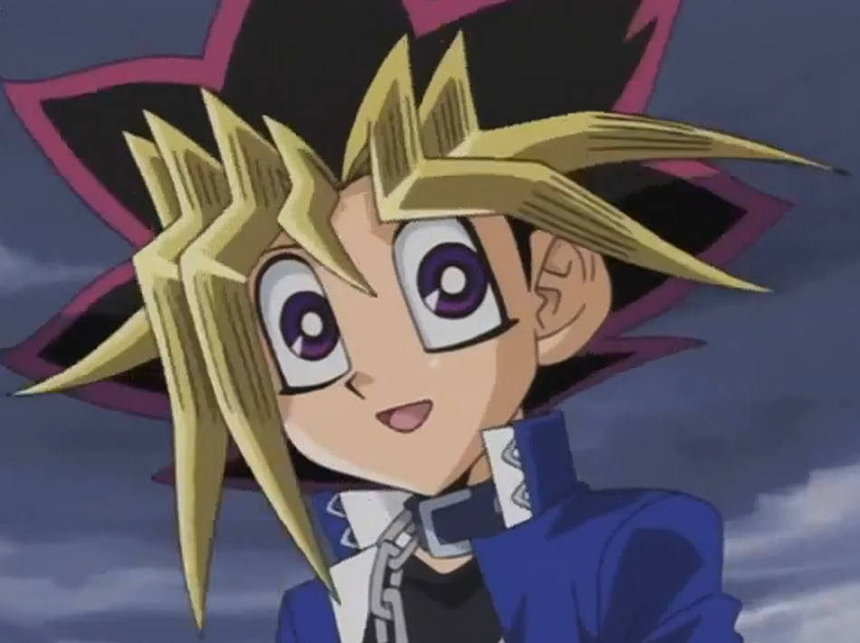

along with his horrible
screams. No one could explain what was happening to the young man.
along with his horrible
screams. No one could explain what was happening to the young man.
Everyone gasped as they witnessed
Yuto 's
glowing eyes along with his horrible
screams. No one could explain what was happening to the young man.
Shark: What the hell?!
Shark said, not understanding what was going on.
said, not understanding what was going on.
Kotori: What's wrong with Yuto?! Why are his eyes glowing like that?!
Kotori asked, unsure of what to think.
asked, unsure of what to think.
Ruri then ran to Yuto, hoping to get through to him as she held him.
then ran to Yuto, hoping to get through to him as she held him.
Ruri: Yuto! Can you hear me?! It's Ruri, I'm right here! Speak to me Yuto!
It was no use. Yuto was in too much pain to even register her presence. Yuma then turn to Astral
then turn to Astral .
.
Yuma: Astral, what's happening to him?!
He asked, hoping his friend would have an answer.
Astral: I can feel a great darkness thrashing inside Yuto's consciousness. It is threatening his life. I can only think of one who would be responsible...
Yuma was about to ask who when it hit him.
Yuma: Wait, you mean it's...?!
Astral nodded.
Astral: It must be "him".
He replied grimly.
Ruri: Yuma! Astral! Please, do something!
Ruri begged desperately as Yuto fell on his back and screamed more.
Kotori: Wait, Ruri knows about Astral? And she can see him?
Kotori asked her mind, surprised. She didn't remember Ruri mentioning anything about Astral in their previous discussions. She wondered if Yuto knew as well. Shark and
Rio ,
as well as Gauche
,
as well as Gauche and Droite
and Droite , were just as stumped.
Akari
, were just as stumped.
Akari had no idea who Astral even was, let
alone see him.
had no idea who Astral even was, let
alone see him.
Yuma: Is there any way to help Yuto?! !?
Yuma asked.
As Astral thought, he noticed something he hadn't before. Le Ruri's bracelet was blinking yellow while she was holding Yuto. He then looked at the
was blinking yellow while she was holding Yuto. He then looked at the
Emperor's Key on Yuma's neck, also faintly blinking gold. With those new details, he came up with a plan. He wasn't sure if it would work, but he had to try it.
on Yuma's neck, also faintly blinking gold. With those new details, he came up with a plan. He wasn't sure if it would work, but he had to try it.
Astral: I have an idea! Yuma, Ruri, you both hold Yuto down! I'll do the rest!
Astral instructed. At once, both the young boy and older girl firmly held their friend on his back and tried to keep him as still as possible.
Astral then placed both his hands on the thrashing Yuto's chest, right over his heart. He then closed his eyes and began to concentrate. He used his own power to draw on the pure energies from Yuma's Key and Ruri's bracelet, both of which began to glow brighter. Their bright glows began to cover Yuto, who seemed to be trying to resist as he struggled more violently.
Ruri: Yuto, please hang on!
Ruri said as the unknown process continued.
Yuma: What are you doing Astral?
Astral: I am attempting to free Yuto from the darkness harming him. Keep holding on.
Astral then focused harder now as the darkness started to fight back.
Astral: You are a powerful force,
Zarc . However, in your weakened, separated state... you can't hope to prevail against someone like me!' Astral thought confidently.
. However, in your weakened, separated state... you can't hope to prevail against someone like me!' Astral thought confidently.
As the seconds passed, everyone saw something else that made their jaws drop.
Using the combined pure energies from his friends, Astral began pulling a dark form out from Yuto's body. At first, it was indiscernible, formless. Yuto's screaming
intensified. Several seconds later, when the darkness was pulled out completely above everyone, it took the form of a
huge dark dragon with dark blue eyess...
the same glowing eyes Yuto had.
with dark blue eyess...
the same glowing eyes Yuto had.
Rio: What is that?!
Rio grabbed her brother's arm very tightly upon seeing the beast.
Shark: I have no idea.
Shark replied.
That dark dragon was now contained in a golden sphere, formed by Astral's now outstretched hands.
Astral: By the power of the Astral World, you are... no more!
Astral declared as he clapped his hands loudly.
When he did, the gold sphere shined bright and the imprisoned dark dragon roared in pain and defiance. When the dragon was completely obscured by the light, both sphere and dragon exploded in a shower of light specks. At the same time, Yuto's screams had finally ended and his eyes stopped glowing, returning to normal. The poor boy then passed out, exhausted from the ordeal he had just suffered. Everything was silent now. No one said a word for a very long moment.
Yuma: Astral, did it work?
Yuma finally asked.
Ruri: Is Yuto going to be okay?
Ruri asked, eyes filled with tears. Astral looked at them both and smiled.
Astral: Yes, I believe Yuto is now out of danger.
He said, sounding very sure.
Ruri: Thank you.
Ruri barely whispered as she hugged her unconscious boyfriend as she let out tears of relief. Yuma and Astral smiled at one another, knowing Yuto would be fine now.
Shark: Yuma... is there something you forgot to mention about your new friends?
Shark demanded.
Yuma cringed, knowing he had to confess now. Kotori, Rio, Akari, Gauche, and Droite also appeared to want answers too.
Yuma: Uh, well... it's kind of... a long story...

Akari and Yuma carried Yuto back to their house and laid him on Yuma's bed to rest. Yuto slept there for the rest of the day and all night. The following morning, he still had not stirred in the slightest. Due to the incident, Akari decided to postpone the camping trip. She knew no one would enjoy it unless Yuto recovered. Yuma insisted that he slept in his room incase something happened to Yuto again. Akari agreed, deciding that Ruri will bunk with her for the night. Later on, as Yuma finally got to sleep, he was rudely awakened by Astral.
Astral: Yuma, wake up! Your
D Pad is flashing!
is flashing!
He said urgently. At this, Yuma snapped fully awake.
Yuma: What?! Seriously?! First Yuto getting that Zarc attack, now this!
He said in a loud whisper as he scrambled out of bed and picked up his D-Pad. He thought it would be a distress signal, but he sighed in relief when he saw that it was flashing green.
Yuma: Oh good, it's just the retrieving signal.
Yuma said in a much calmer voice.
Astral: Meaning one of our friends has succeeded in their mission and are asking to be picked up. See who it is.
Astral advised. As Yuma touched the center screen, it showed a hologram of the initials "E.H." in bright red.
Yuma: That's
Judai ! He must've gotten
Serena
! He must've gotten
Serena out of Academia!
out of Academia!
Yuma said with excitement.
Astral: Excellent. In that case, I'll go get them and drop them off in Judai's World.
Akaba Leo will never reach them there.
will never reach them there.
Astral said, confusing Yuma.
Yuma: Wait. Shouldn't I go with you?
Yuma asked. Astral shook his head.
Astral: I can handle this myself. You need to get some rest. Also, you should be here in case anything happens to Yuto in my absence. This will not take very long.
I should be back in an hour or so.
Yuma nodded as Astral reentered the Key.
Yuma then climbed quietly out his window and got onto the roof. He raised the Key up and in a bright flash, the,
enormous ship flew up into the sky and disappeared. After that, Yuma lay on the roof beneath the starry sky and waited for Astral to return. While he was gone, Yuma received a message from
Yusei
flew up into the sky and disappeared. After that, Yuma lay on the roof beneath the starry sky and waited for Astral to return. While he was gone, Yuma received a message from
Yusei saying his mission was a success.
saying his mission was a success.
It was about an hour and a half later when the Different Dimension Airship finally returned and flashed back inside the Emperors Key. When he showed himself again, Astral looked pleased.
Yuma: Hey. How did it go?
Yuma asked.
Astral: It went well, for the most part. Judai and Serena are both fine and safe, as well as several others.
Yuma: What others?
Yuma asked, curious.
Astral: There was a group of Duelists that needed rescuing other than Judai and Serena. I should mention that one of them is none other than
Sakaki Yusho .
.
Yuma:
Yuya
's father? Thats right! He was there too!
Yuma gasped as he remembered.
Astral: Yes. I'll let Judai explain the details when we have the meeting. Has anything happened in my absence regarding Yuto? Or any other signals from our friends?
Astral asked.
Yuma: Nothing from
Yugi
yet, but I did get a message from Yusei. He's back in his world with
Yugo
and Rin . As for Yuto, he's still sleeping like a baby.
. As for Yuto, he's still sleeping like a baby.
Yuma answered.
Astral: How did Yusei, Yugo, and Rin arrive there without our assistance?
Astral asked, stumped by this news.
Yuma: Yusei said he'll explain later at the meeting. But he said everyone was fine.
Astral: Thanks for informing me Yuma.
Very pleased with this, Astral returned inside the Key. Yuma, happy that two of his friends achieved their goals as he did, went back inside and climbed back into bed for a good night's sleep.
Later, the morning came and moved into the afternoon. Yuto was still sleeping. Ruri sat on a chair beside him, insisting she'd be there when he woke up. After leaving Ruri and Haru to watch over Yuto, the Tsukumo siblings went back downstairs where everyone else waited. Shark, Rio, and Kotori all came back to check how Yuto was doing. Gauche and Droite were there also, with someone that Yuma and Astral were very surprised to see.
Before Yuma stood a tall young man with pale blue eyes, blonde hair with a dark green front with same colored bangs, and wore dark colored clothes. He had just walked in through the front door with Gauche and Droite.
Yuma:
Kaito !
!
Yuma said in surprise, not expecting his friend and biggest rival, Kaito Tenjo, to show up at his house.
Yuma: What're you doing here?
Kaito: Droite called me and told me what happened. She thought this would be something I should know about.
Kaito said, looking at Droite. She nodded while looking away.
Shark: How is he?
Akari: Yuto's still sleeping. No more signs of pain. Ruri will let us know when he's awake.
Akari said. This relieved most of the group.
Kotori: After what he went through yesterday, I'm not surprised he's still out.
Rio: I still can't believe what Yuma and Astral told us about them yesterday.
Rio admitted, sounding very sad.
Kaito: From what I've heard, those two are not typical people. So Yuma, what's their story?
Kaito asked, curious to know what they had to deal with this time.
After sitting down and taking a breath, Yuma told Kaito everything.
While Yuma was spilling the beans to Kaito downstairs, Ruri and Haru watched over Yuto as he slept.
Haru: He still seems to be resting peacefully, after what I've heard.
Ruri: I hope he is. Thanks for helping, Haru.
Ruri said quietly. The old lady smiled warmly at the young girl.
Haru: Oh it's nothing, my dear. I like that young man too, especially since he's so good looking.
Both women chuckled.
Haru: Well, I think we've done all we can. We just have to continue to wait and see. If you need me Ruri, I'll be doing some laundry down the hall.
Ruri nodded as Haru walked out. It was just her and her sleeping boyfriend now in that room.
Ruri looked back down at Yuto, who indeed looked more at peace than she had ever seen him. Despite knowing he would be okay, she still worried about what had caused
his pain in the first place. She wondered if it had something to do with his "dark" connection to
Yuri . Yuma and Astral still had not properly
explained that connection, nor why the Academia's Professor needed her to revive a loved one of his. If he needed another person's life in exchange, why did he choose
her of all people? Ruri heard she and Yuto had to wait for the whole story, but she was getting tired of waiting. She then took hold of Yuto's hand and held it in
both of hers.
. Yuma and Astral still had not properly
explained that connection, nor why the Academia's Professor needed her to revive a loved one of his. If he needed another person's life in exchange, why did he choose
her of all people? Ruri heard she and Yuto had to wait for the whole story, but she was getting tired of waiting. She then took hold of Yuto's hand and held it in
both of hers.
Ruri: I'm so confused, Yuto. I just want to know what all this is about, and why it involves us. Everything has happened so fast that it's all just crazy. Here we are, in a place that looks like how home used to be and no one here knows us. We are the only ones literally from another world, aside from Astral that is. I just wish we had normal lives like everyone else.
She then laughed humorlessly as she looked at her bracelet
Ruri: But we're not normal are we? I mean, I have a bracelet that glowed bright for reasons I can't explain and you had a huge dark creature pulled out from inside
you. None of this makes sense, does it?
Ruri asked, not expecting an answer.
Yuto: No, it doesn't.
Ruri looked back to see that Yuto had awoken at last and smiled up at her as he sat up.
Ruri: Yuto!
Ruri then hugged him and cried softly. Yuto patted her back as they hugged.
Yuto: I'm fine now, Ruri. Everything will be fine.
He assured her before pulling her in for a warm gentle kiss. Outside the bedroom door, Haru smiled at the couple before walking silently away.
Back downstairs, Yuma was catching Kaito up on recent events. He told him who Yuto and Ruri were, where they really came from, and how and why he and Astral brought them here to Heartland. Kaito's reaction was the same as the others when he told them...
Flashback
When Yuma was done revealing everything, his sister and friends were all wide eyed with shock and horror. It was a moment before anyone spoke again. While Akari, Gauche, and Droite were speechless from the revelations, the rest of them weren't.
Kotori: I can't believe it.
Kotori whispered, her hands covering her mouth.
Rio: They came from a Heartland just like ours, only...
Rio couldn't finish, too saddened by the awful details. She felt close to tears.
Shark: I know. Damn.
Shark said softly. Now he understood why Yuto and Ruri didn't want to talk about their old home, and why Akari forbade them to ask.
Shark: I honestly don't know what shocks me more. The fact that a version of our home was annihilated by sick minded Duelists taking orders from a heartless
maniac, or that Yuto is part of an evil that once tried to destroy the world.
He said in disbelief. Akari, Gauche, and Droite were too speechless to say anything.
Yuma: That's not true anymore! I mean, the part about Yuto that is!
Yuma said, defending his new friend.
Shark: Meaning what?
Shark asked.
Astral: Meaning that Yuto is no longer a threat to himself or others. By using the combined energy of Yuma's Key and Ruri's bracelet, I managed to extract Zarc's dark soul from within Yuto's body and destroyed it.
Fin du Flashback
Kaito was silent for a long moment. He honestly thought things wouldn't get any weirder after the whole war with the Barians. This was a whole other can of worms that Yuma inadvertently opened.
Kaito: So then, this Zarc... he's gone now?
He asked after letting the story sink in.
Astral: Only his fragment inside Yuto. As far as we know, his counterparts from the other dimensions still have their fragments connecting them to Zarc. But we have a made a significant discovery today.
Rio: What discovery?
Rio asked.
Astral: We have just learned that there is a way to stop Zarc for good. When he was first separated, it was meant so that his fragments could not find each other in the other dimensions. Of course, Zarc himself still existed and, therefore, might learn how to revive himself. Now though, we have a more permanent solution. If Ruri's counterparts used their bracelets along with the unique powers of the Duelists sent to protect them...
Kotori: The rest of Zarc's fragments would also be destroyed, ending him once and for all.
Kotori finished for Astral, who nodded in agreement.
Astral: Exactly.
Astral then turned to Yuma.
Astral: Yuma, we must tell the others about this when we have our meeting.
Yuma: Yeah, definitely!
Yuma said energetically.
Shark: Meeting?
Shark asked. This got the whole group's attention.
Yuma: Before we went off on our separate missions, we all agreed to have a meeting with the dimensional counterparts we rescued so that they could hear of their true origin at the same time.
Kaito: How do you know when to have this meeting?
Kaito asked.
Yuma: One of us will send a signal to the others to tell them that it's time for the meeting. It will be a...
Yuto and Ruri: Kaito ?
Yuma and everyone else looked up to see Yuto and Ruri coming down the stairs. The couple were more than a little surprised to see someone familiar to them as they reached the ground floor.
Yuma: Yuto! How are you feeling?
Yuma asked right away, getting Yuto's attention.
Yuto: Much better now, thanks to you guys. Ruri told me what she, you, and Astral did for me. I'm grateful.
He said, smiling at the boy and his energy based friend.
Yuma: Aw, don't mention it buddy!
Yuma replied happily.
Astral: our life was one worth saving.
Astral added.
Kaito cleared his throat, getting everyone's attention again.
Kaito: You must be Yuto and Ruri, right?
Kaito asked the couple, who nodded.
Kaito: So then answer me this. How did you know my name when you saw me? I know we have never met before.
Yuto and Ruri looked at one another nervously. They were told by Astral that they would encounter a person here who looked like someone they knew back in their home. They just never expected it be Kaito Tenjo of all people.
Yuto: Oh, uh. Well, it's just that... we mistook you for someone we...
Yuto started, but Kaito interrupted. He had a guess of how they knew and wanted to see their reactions.
Kaito: There's another me where you're from, isn't there? Another Kaito who lives a different life in your own Heartland?
As he expected, Yuto and Ruri looked both stunned and totally confused. All the others were too.
Ruri: What? H-How did you know?
Ruri asked tentatively. This confirmed it for the guy, who hid his own surprise very well.
Kaito: Yuma told us everything. If you two are from a different version of Heartland and you clearly recognized me, then it makes sense that another me has to be there too.
Yuto and Ruri stared at Yuma, who looked down in shame.
Yuma: Sorry guys, I had to tell them. How could I not? They all saw what happened, aside from Kaito.
The couple shook their heads.
Yuto: It's alright Yuma. Don't worry about it.
Yuto said.
Ruri: We honestly didn't know how long we could keep our secret anyway. I'm just glad it is among your family and friends.
Ruri added. Yuma then felt slightly better.
Shark: Wait a minute! There's another Kaito in your Heartland?! How the hell's that possible?!
Shark asked in shock.
Kotori: Yeah, and are there other versions of us there too? Including Yuma?
Kotori asked, also startled by this new knowledge. Yuto and Ruri both shook their heads.
Yuto: Sorry, but out of everyone we met here, Kaito is the only one we know back home.
Yuto answered. This slightly disappointed and confused the rest of the group. The subject of the alternate Heartland got Rio to offer her sympathies.
Rio: Listen guys. We're so sorry about what happened. To your own Heartland, I mean.
Rio said sadly. Yuto and Ruri looked sad themselves.
Kotori: I can't imagine what it must've been like... to watch your home being attacked and destroyed... seeing it all in ruin. If that happened here, I...
Kotori said with great sorrow.
Yuto: Be glad you won't have too.
Yuto said quietly.
Shark: That guy, Akaba Leo... I really want to kick his ass, even though it wasn't our Heartland he attacked.
Shark admitted angrily.
Yuma: You and me both.
Yuma said in agreement.
Kaito: That makes three of us.
Kaito also said.
Astral: Akaba Leo has committed many horrible crimes. He will be punished.
Astral assured the trio. It was then that the three people who were silent the whole time had finally spoken.
Gauche: This is all so bizarre, even after learning about Astral and the Barians. But still, I'm sure about one thing: Akaba Leo needs a serious reality check! I
hope you guys give it to him!
Gauche stated passionately to Yuma and Astral.
Droite: I second that.
Droite said.
Akari sighed before she had her say in the matter.
Akari: I still don't understand half of what's going on, I'll admit that. But anyone who destroys a city full of good people for some selfish reasons needs to get what's coming to them! For Yuto and Ruri, I certainly hope he does!
Yuma and everyone smiled from his big sister's words. Yuto and Ruri smiled at one another as they held hands, looking forward to getting justice for their ruined home.
As they did, nobody noticed the way Rio looked at the couple, and then to Yuma. Or rather, almost no one. Ruri got a quick glance before Rio turned away. She figured what it may be about. Akari sighed again.
Akari: Well, I guess this means the camping trip is cancelled.
She said sadly. Most of the group gasped.
Rio: Why cancel it? I thought you were only postponing it?
Rio asked, surprised by the announcement.
Akari: Obviously with what's going on now, it may not be the best time.
Akira explained.
Yuto: I disagree.
Yuto said.
Yuto: We need to keep our spirits up, even in the worst of times. If we don't, life here would be no different than life back in our Heartland.
He said as he looked at his girlfriend, who nodded.
Ruri: That's right. Things like this camping trip are necessary for people to help forget about their troubles and are good for the heart and soul. We can't cancel it, Akari-san.
Yuma, Kotori, and Rio agreed. Shark reluctantly agreed too. After further encouragement from the others, including Kaito, Akari changed her mind.
Akari: Alright. You all make a good point. The trip is back on.
This cheered up mostly everyone (Shark still wasn't a fan but he couldn't say no at this point).
Akari: With that being said, I suggest that after dinner we all start our packing and get to bed early for tomorrow.
Later, after a very enjoyable meal prepared by Haru, nearly everyone left for their own homes. Gauche and Droite wished they could come, but they had other plans. To the surprise of everyone, Kaito decided to come as well, and perhaps bring his little brother along. Before long, the only ones that hadn't left were Kotori and the Kamishiro siblings.
Kotori: I'll see you guys in the morning!
Kotori said cheerfully as she headed out.
As Shark and Rio were about to leave as well, Rio stopped just outside the door.
Rio: Ryoga, you go on ahead. I'll meet up with you at home later.
This confused her brother.
Shark: Huh? Why later Rio?
Rio: I just need to talk to Ruri about something. It's girl stuff.
She said. Shark sighed, knowing that was all he needed to know.
Shark: Fine, whatever. If you're not home within the next hour, I'll come back to drag you home.
He complained as he walked away. Rio chuckled at her brother's attitude. When he was out of sight, she went to find Ruri, who seemed to be heading upstairs.
Rio: Hey Ruri. Can we talk for a bit outside, just the two of us?
Rio asked her new friend.
Ruri: Sure, of course.
Ruri said, knowing what was on the blue haired girl's mind. After walking outside, the two girls sat on the front porch.
Ruri: So, what did you want to talk about?
Rio looked unsure of how to begin.
Rio: When you saw Yuto for the first time, how did you feel? Did something just click and figured he had to be the one for you? Or was it something that...
happened over time?
She asked shyly.
Ruri: You like Yuma, don't you Rio?
Ruri asked, surprising the other girl. Rio blushed a little and looked conflicted as she stared down at her feet.
Rio: Am I really that obvious?
She asked. Ruri chuckled.
Ruri: Not really. It was easy for me because the way you looked at Yuma before was the same way that Yuto looks at me. But I thought you found Yuma annoying?
Ruri asked, making Rio sighed.
I do, but only when he doesn't address me by my name. Other times, he's kind, brave, and willing to put himself at risk to save those he cares about. He helped me
and my brother lots of times. I guess that, as time went by, I began to grow really fond of him. Plus...
She said with a small smile...
Rio: He is kinda cute.
Ruri smiled with her.
Rio: And now, recently...
Ruri: You started to have stronger feelings for him.
Ruri finished. Rio nodded, still looking down.
Ruri: Have you told Yuma how you feel about him?
Rio then shook her head.
Rio: No, and I don't think I can.
She said regretfully.
Ruri: Why not?
Ruri asked, not understanding where this was going. Rio then looked Ruri straight in the eye.
Rio: Kotori also likes Yuma. She never told me, but I can just tell. She's known Yuma longer than I have and has always been by his side before I came along. If I
try anything, it could damage our friendship. I really don't want that. I'm not sure what to do.
Rio confessed. Ruri understood her dilemma.
Ruri: Rio, let me ask you this. I know you never told Yuma, but do you know how Yuma feels about you? Or about Kotori?
Rio: Actually, I think he only thinks both of us as friends. But maybe that's because he's clueless about both our feelings.
Rio said, referring to herself and Kotori.
Ruri: So then, Kotori hasn't told him how she feels either?
Rio: I don't think so. If she did, she and Yuma would have been acting awkward around each other.
Rio said. She figured that had to be the case, seeing how fine both of them had acted.
Rio: Ruri, did you ever worry about another girl wanting to steal Yuto from you?
Ruri shook her head.
Ruri: No. Yuto and I loved each other since the moment we met. He would never hurt me, nor would I hurt him. Right now though...
Ruri said strongly.
Ruri: This is about you. You and your feelings.
Rio then looked down again.
Rio: I've never had a problem like this. I know how most guys see me, and I show them I'm not just some easy girl they think they can score with. Yuma is not like
that. He knows the kind of person I am and accepts me, at least as a friend. I want us to be more than that, but at the same time I don't want to hurt Kotori.
Ruri then put a hand on her friend's shoulder.
Ruri: Rio, listen to me. You're not going to be happy until you resolve this in some way. I think you should tell Yuma your feelings for him and then hear how he feels. If he only sees you as a friend, then you won't have to worry about Kotori being hurt.
Rio: But I would be the one that gets hurt.
Ruri: I'll help you deal with that if it happens.
Rio: And if... Yuma does decide he wants to be more than friends with me?
Rio asked tentatively.
Ruri: If Kotori hasn't said anything beforehand, and if Yuma doesn't feel the same way toward her, then you two should give it a try and see how things work out.
Ruri answered.
Rio: What about Kotori herself?
Rio asked, still worried about ruining their friendship.
Ruri: I like Kotori too. She seems like a very kind and caring person. If you two really are friends, then she will understand and let you be happy.
Rio: Even if she isn't the one with Yuma?
Rio asked.
Ruri: There is no way anyone will not get hurt from things like this. When it comes to love, you just have to take a chance and hope for the best.
Ruri suggested strongly. Rio nodded, though still unsure of what to do. Seeing this, Ruri came up with an idea.
Ruri: Hey Rio, want to have a quick Duel before you head home? We might not get a chance on our trip. After all, during dinner Akari did say "No tech allowed for
the duration of our time at camp." What do you say?
Rio smiled more and agreed.
Rio: Sure, I'd like that.
With that, the two girls walked out onto the sidewalk in front of the house before they got out their D-Gazers and Duel Disks.
Rio and Ruri: Duel Disk, Set ! D-Gazer, Set !
Both girls declared.
Computer Voice: AT Vision, Link established.
Said the computer voice from their Duel Disks as they created the new virtual arena.
Rio: I'll go first! My Turn! Draw!
Turn 1: (Ruri: 4000 LP / Hand: 5)(Rio: 4000 LP / Hand: 6)
Rio: JI'll start by Summoning
“Aurora Wing ”
.
Rio's first Monster looked like a majestic blue/green bird that seemed to be shining with the Northern Lights.
Rio: Then I play
“Blizzard Vision ”
. This Magic card can be activated when I control one WATER Monster! Now I can Special Summon it as a Normal Monster with the same Attribute, Type, and Level as
that WATER Monster!
“Blizzard Vision ”
now resembled “Aurora Wing ”,
except a bit paler... like ice.

Ruri: She's going for an Xyz Summon already.
Ruri noted mentally.
Rio: I Overlay the Level 4
“Aurora Wing ”
and now Level 4 “Blizzard Vision ”
! With these monsters I build the Overlay Network! Xyz Summon! Appear
“Reichoju Sylphine ”!
”!
A light violet ice humanoid now stood to do battle.

Rio: I Set one card facedown and end my turn.
Now, come at me Ruri!
Rio challenged. Ruri smiled in response.

Ruri: Definitely! My turn! Draw.
Turn 2: (Ruri: 4000 LP / Hand: 6)(Rio: 4000 LP / Hand: 3)
Ruri didn't believe she had to worry about attacking her opponent's Monster for this.
Ruri: First, I Summon
“Lyrical Luscinia Cobalt Sparrow ”
.
Ruri's Monster resembled a young girl wearing a brown bird costume.
Ruri: I now activate the Effect of
“Lyrical Luscinia Sapphire Swallow ”
in my hand! When I have a "Lyrical Luscinia" Monster on my Field that isn't
“Sapphire Swallow ”
, I can Special Summon it and another Level 1 "Lyrical Luscinia" from my hand to my Field! Show yourself,
“Sapphire Swallow ”
! You too, my second
“Cobalt Sparrow ”
!
Ruri then Special Summoned another “Cobalt Sparrow ” and her other new Monster, which looked like the first except it was a girl in a blue bird suit.
Rio: She's not holding back either.
Rio said to herself.
Ruri: Now
“Cobalt Sparrow ”
's Monster Effect activates! When it is Special Summoned, I can take another
“Cobalt Sparrow ”
from my Deck and add it to my hand!
She then added her third
“Cobalt Sparrow ” to her hand.
Ruri: I now Overlay my two Level 1
“Cobalt Sparrow ”
and Level 1 “Sapphire Swallow ”
!
Birds with beautiful wings! Gather on the battlefield and take brilliant flight! Xyz Summon! Dance in the sky! Rank 1!
“Lyrical Luscinia Assembly Nightingale ”
!
Ruri's Xyz Monster had the appearance of a female humanoid bird with light blue and pink feathers.
Rio: No Attack Points?
Rio asked, not able to contain her confusion.
Ruri: Not for long! “Assembly Nightingale ” gains 100 Attack Points for each of it's Overlay Units! Since it has three, my Monster's Attack Power is now at 300!
(Lyrical Luscinia - Assembly Nightingale: 0 + 300 = 300 ATK)
Rio: But your Monster is still too weak to attack mine.
Rio pointed out. Ruri continued to smile.
Ruri: I wasn't planning on attacking your Monster in the first place. For each of it's Overlay Units, “Assembly Nightingale ” can attack you directly the same number of times each Battle Phase!
Rio: It what?!
Rio exclaimed.
Ruri: You told me to come at you Rio, and now I will! Battle! “Lyrical Luscinia Assembly Nightingale ” , Direct Attack!
Rio held her ground as Ruri's bird Monster flew at her and struck her three times.
(Rio: 4000 LP - (300 x 3) LP = 3100 LP)
Rio: I Set 2 cards facedown and end my turn.

Ruri: You okay, Rio?
Ruri asked. Rio smirked back at her.
Rio: Trust me, I've suffered worse than that. But now you're in for it. My Turn! Draw!
Turn 3: (Ruri: 4000 LP / Hand: 2)(Rio: 3100 LP / Hand: 4)
Ruri had the feeling she was in trouble now.
Rio: I Summon
“Blizzard Falcon ”.
Standing alongside its fellow Monster was a blue and green falcon that appeared crystallized.
Rio: Now I equip it with “Chinmoku no Tsubasa ” . The Winged-Beast Monster Equipped with this gains 300 Attack Points and is immune to the Effects of my opponent's Magic and Trap cards!
(Blizzard Falcon: 1500 + 300 = 1800 ATK)
Rio: And now
“Blizzard Falcon ”
's Effect! When it's Attack Power becomes higher than it's original Attack Power, I can inflict damage to you equal to the difference! That's 300 points of damage
to you!
Rio said confidently.
Ruri yelped a bit as she felt an ice wind struck her.
(Ruri: 4000 LP - 300 LP = 3700 LP)
Rio: This is just the beginning! Battle!
“Blizzard Falcon ”
attack
“Lyrical Luscinia Assembly Nightingale ”
!
“Blizzard Falcon ” began to swoop to
“Assembly Nightingale ”
for the kill, but...
Ruri: It won't be that easy! I activate “Assembly Nightingale ” 's Monster Effect! By detaching one Overlay Unit, I can negate “Nightingale ” 's destruction. Also, any Battle Damage I take is reduced to zero!
A glowing bubble surrounded “Nightingale ”, protecting it and Ruri's Life Points from the opposing Monster's attack.
Rio: But by doing that, your Monster loses 100 Attack Points!
Rio said as Nightingale's Attack Power dropped to 200.
(Lyrical Luscinia - Assembly Nightingale: 300 - 100 = 200 ATK)
Rio: I had a feeling your Monster had some kind of protection Effect, now I'm sure of it! I now activate
“Sylphine ”
's Monster Effect! Once per turn, by detaching one Overlay Unit, I can negate the Effects of all other face up cards on the Field until my next Standby Phase, and
then one of my opponent's Monsters loses 300 Attack Points for each card negated! Perfect Freeze!
Ruri: Oh no!
Ruri muttered as her Monster now had 0 Attack Points and couldn't use it's protection effects anymore.
(Lyrical Luscinia - Assembly Nightingale: 200 -> 0 ATK)
Rio: Take this!
“Reichoju Sylphine ”
attack
“Assembly Nightingale ”
! Ice Ray!
Rio's frozen beast began to "rain" down on Ruri's beast. She wasn't going to let that happen though.
Ruri: Trap Card open!
“Lyrical Luscinia Bird Shield ”
! When a "Lyrical Luscinia" Monster is about to be destroyed in battle, that Monster is not destroyed and any Battle Damage is reduced by half!
Ruri braced herself as she took some damage, but not as bad as it could've been.
(Ruri: 3700 LP - 1000 LP = 2700 LP)
Rio: Nice move Ruri! You're good, but you're still not going to win! I end my turn!
Rio said proudly. Ruri nodded in return.

Ruri: You're strong too, Rio! As for the part about me not going to win... I'm about to prove you wrong! My turn! Draw!
Turn 4: (Ruri: 2700 LP / Hand: 3)(Rio: 3100 LP / Hand: 2)
At this point, Ruri felt she had the Duel in the bag.
Ruri: I play “Lyrical Luscinia Bird Strike ” ! When I have a "Lyrical Luscinia" Monster on the Field, I can negate the Effects of all your Monsters!
Rio: Darn it.
Rio cursed. She knew that Ruri's Monster had all it's Attack Points and abilities back now.
(Lyrical Luscinia - Assembly Nightingale: 0 + 200 = 200 ATK)
Ruri: Now for my big play! Trap card open!
“Lyrical Luscinia Bird Power ”
! This gives my "Lyrical Luscinia" Monster 1000 more Attack Points for each Winged-Beast Monster on the Field other than itself until the End Phase!
Rio: Both of my Monsters are Winged-Beasts!
Rio realized. Ruri nodded with a confident smile.
Ruri: That's right Rio!
(Lyrical Luscinia - Assembly Nightingale: 200 + 2000 = 2200 ATK)
Rio was definitely caught off guard by that move.
Ruri: Your Monsters just made mine even stronger! With two direct attacks from
“Nightingale ”
, this Duel's over! Battle!
“Assembly Nightingale ”
, Direct Attack!
Ruri's Monster moved in to finish Rio off, but the latter wasn't finished.
Rio: It's not over yet! Trap card open,
“Seinaru Barrier Mirror Force ”
!
Now your attack is negated and all your Monsters in Attack Mode are destroyed!
”
!
Now your attack is negated and all your Monsters in Attack Mode are destroyed!
Rio declared, activating her last facedown card, but to her astonishment, “Nightingale ” passed right through the barrier protecting her.
Rio: What the?!
Ruri: The Monster strengthened by
“Bird Power ”
is also unaffected by Traps for the rest of the turn!
“Assembly Nightingale ”
, Feather Slice !
Rio flinched and fell to her knees from the final two attacks from Ruri's Monster.
(Rio: 3100 LP - 2200 LP - 2200 LP = 0 LP)
Despite losing, Rio actually felt better after the Duel. She got back up as Ruri approached her.
Rio: You're definitely a strong Duelist, Ruri. I haven't met many girls who could duel that well.
Rio said as she and Ruri shook hands.
Ruri: There are some good Duelists who are girls in the Resistance. You would really fit in.
Ruri said, smiling.
Yuto: I agree with Ruri.
Ruri and Rio turned to see Yuma, Yuto, Akari, and Haru just outside the front door of the house.
Yuto: I hate to be the one dueling you.
Yuto added.
Rio: How long have you guys been watching?
Rio asked.
Yuma: We saw the whole thing. That was an awesome Duel!
Yuma said excitedly. Both girls smiled from Yuma's praise.
Before another word could be spoken, Yuma's Duel Disk began making a beeping noise. Plus, the center screen was blinking red.
Yuma: Astral, look! Is that what I think it is?!
Yuma asked in alarm. Astral nodded.
Astral: Indeed, it is. One of the others needs our help!
Ruri: Wait, what is going on now? What's up with your Duel Disk, Yuma?
Ruri asked. Yuma started to panic.
Yuma: It's a distress signal! If any of our Duel Disks blink red like this, it means there's an emergency and one of us needs help ASAP!
He shouted, making the others gasp with worry.
Yuto: What do you mean by that?
Yuto asked.
Astral: We told the others about this, but not to you and Ruri. Leo Akaba is after 3 more girls in the other dimensions, not just Ruri. Unbeknownst to him, certain
individuals were set in place to protect them. Now it seems one of them needs assistance.
Astral explained, surprising the couple more.
Ruri: I'm not Academia's only target?
Ruri gasped.
Rio: Who's sending the signal?
Rio asked. Yuma touched the blinking red screen, revealing a hologram of a
golden upside down pyramid with an eye in the center .
None of the others know what the object was, but Yuma and Astral did.
.
None of the others know what the object was, but Yuma and Astral did.
Astral: It's
Yugi
! Something must be happening in the Standard Dimension that he requires immediate reinforcements! I'm positive
Judai and
Yusei
must also be getting the signal as we speak!
Astral declared. Yuma nodded in complete agreement.
Yuma: Yeah, we gotta go now! The sooner we pick them up, the sooner we can help Yugi! Oh, I almost forgot! Yuto, last night I've linked up my Duel Disk with yours
and Ruri's so that we can stay in touch. Okay, now we really gotta go!
Yuma yelled to the further surprised couple as he began to run off. He didn't get very far before he was stopped.
Akari: Wait, you're going off again?! You just barely got back!
Yuma: I'm sorry Nee-chan (trad: Nee-chan = Big Sis), but my friends need me! I have to go!
Yuma said determinedly.
Akari: Yuma, I don't want you to get hurt!
She yelled.
Yuma: I'll be fine! Astral and the others will watch my back! Trust me!
Seeing the look on her little brother's face, and the reassuring look for her grandmother, Akari sighed and backed off.
Akari: I don't approve of this, but I won't stop you. Just be careful.
Akari said, with Yuma nodding to her that he will be.
Yuto: Yuma! If your friends need backup, we should come with you!
Yuto said.
Ruri: Yes, please let us help!
Ruri added, but the young boy wouldn't hear of it.
Yuma: No way! You two need to stay here, where it's safe!
Astral: Yuma is right. We can't give Leo Akaba another chance to try to take Ruri again. We're sorry. Besides, Ruri's brother wouldn't appreciate us bringing his
sister back into a conflict where her life would be at risk.
Astral pointed out.
Yuto and Ruri sighed in defeat. They both promised
Shun that they would look after each
other, keep each other safe. He would not be happy if either of them broke their word.
that they would look after each
other, keep each other safe. He would not be happy if either of them broke their word.
Yuto: Fine. We understand.
Yuto said reluctantly. Ruri nodded too as she approached Yuma.
Ruri: I don't like the idea of not being able to help, but I know why I can't go. Still...
She then hugged Yuma.
Ruri: I never got to say thank you for saving me and Yuto. So thank you, and thank you for bringing us to stay in your world and making us feel welcome here.
She gave Yuma a very warm smile.
Ruri: Come back safe.
She whispered before stepping back. Yuma smirked.
Yuma: No problem! And I'll definitely come back!
Yuma then turned to leave for his mission. Once again, however, he was halted by another voice.
Rio: Yuma, wait!
Yuma turned back to see Rio walk up to him.
Yuma: What is it, Shark's sis?
Yuma asked, hearing another groan from her.
Rio: First of all, call me Rio!
She snapped. Yuma flinched a little.
Yuma: Okay, sorry! So, what is it Rio? You want to come too?
Yuma asked.
Rio: No. I would never hear the end of it from my brother if I traveled to another world with you without him.
Rio explained, calmer now.
Yuma: Then what's up? I'm in a hurry here!
He couldn't understand what she was getting at. He had to leave now if he was going to reach Yugi in time.
Rio: I know, this will take just a second. Yuma...
She started
Rio: There is something I want to talk to you about when you get back from helping your friends.
Yuma raised an eyebrow.
Yuma: What would that be?
He asked. Rio took a deep breath and let it out... avant de prendre son visage et de l'embrasser.
Yuto and Akari were stunned by this act, and Haru just chuckled. Astral, while surprised himself, was also amused. Ruri, however, seemed pleased that Rio was doing something about her feelings.
As for Yuma himself, he was frozen from shock. He was being kissed on the lips by Shark's sister! This was something he never imagined would happen. After a moment, Rio broke the kiss. Yuma's face was as red as the vest he was wearing, eyes wide and mouth hanging open. He was definitely speechless. Rio gave a small smile from the dumbstruck look he had.
Rio: It has to do with that.
She simply said. Yuma stood petrified for several seconds before Astral intervened.
Astral: As entertaining as that was for me to witness, we really must be on our way. Don't you think so, Yuma?
Yuma then shook his head and snapped out of it.
Yuma: Oh! Uh... yeah! We have to go!
He then waved at everyone, while still slightly blushing when he looked at Rio again.
Yuma: We'll be back real soon!
Yuma called out as he and Astral ran towards
Heartland Tower .
Rio sighed as she turned to everyone.
.
Rio sighed as she turned to everyone.
Akari: What the heck was that about?
Akari asked. Rio chuckled.
Rio: I just had to get it out.
She then turned unusually serious.
Rio: Don't any of you breathe a word of this to my brother or Kotori. I'll tell them myself when I'm ready. Got that?
Yuto: There's nothing to say.
Yuto said, getting message.
Akari: My lips are sealed.
Akari added.
Haru: Me three.
Haru replied.
Ruri: Of course I won't say anything.
Ruri said. Rio nodded with approval. As she turned to leave as well, she gave Ruri a more somber look.
Rio: Ruri, I really do hope your own brother is okay.
Ruri nodded, also looking appreciative.
Ruri: Thanks Rio. So do I.
With that and a friendly goodbye, Rio finally walked away and headed for her own home. Yuto then held his girlfriend by the arm and smiled at her.
Yuto: Shun will be alright. I'm sure of it.
Yuto said, sounding positive. Ruri nodded as she looked up at the sky.
Ruri: Be safe... Nii-san.
(trad: Nii-san = Big brother)
Yuri strode through the hallway, heading towards his room in Academia. He was still frustrated that Ruri had escaped from him, and that that Yuma kid got the drop on him the way he did. Yuri had never felt so humiliated. The boy certainly didn't like to hear how pissed the Professor was that he failed his mission.
After the briefing, the Professor told Yuri to get some rest before he traveled to the Synchro Dimension. He hoped he would have better luck capturing the girl living there.
Yuri: I probably would have gotten Ruri if her meddling brother hadn't stood in my way. On the bright side...
He said, taking a card out of his pocket while wearing a wicked smile.
Yuri: I won't have to worry about him anymore.
He then chuckled as he gazed at his consolation prize :